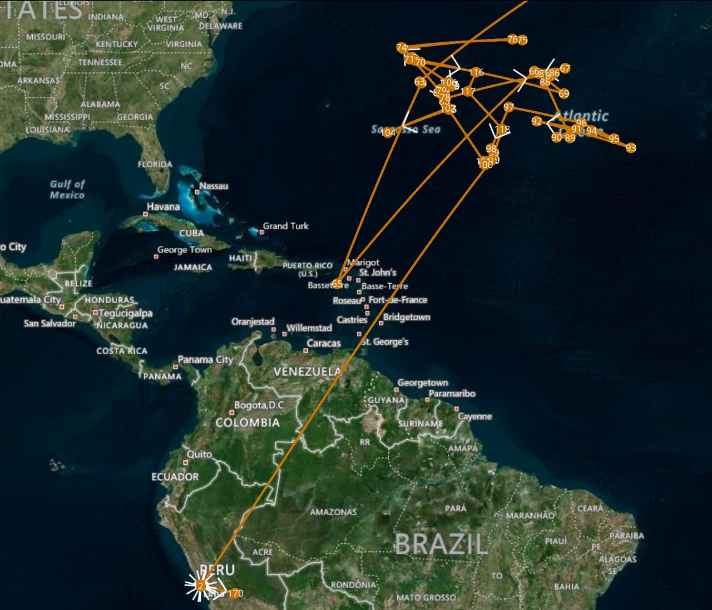
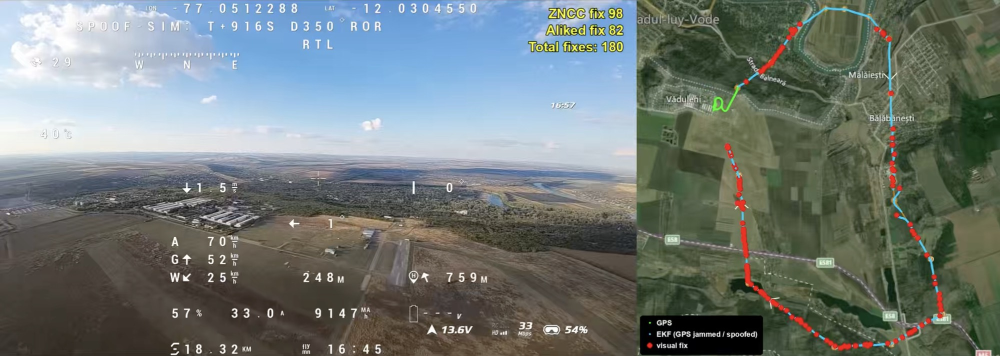
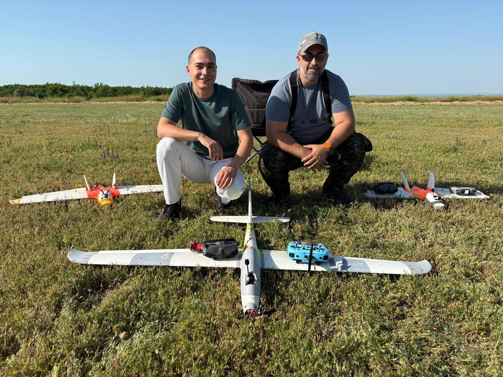
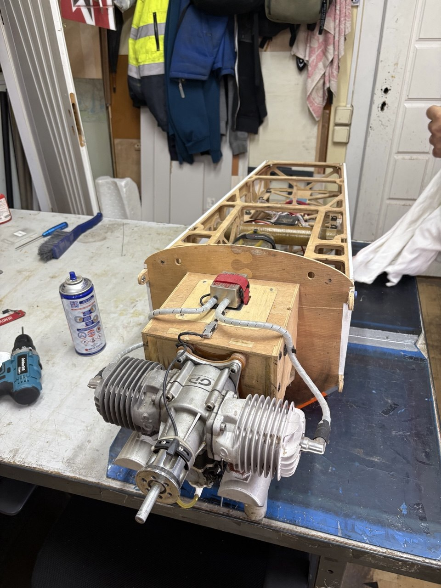

SRL „Stella Aerospace” · Chișinău
Drone moldovenești care zboară fără GPS
Navigație rezistentă la bruiaj, recunoaștere aeriană și producție locală
noiembrie 2026 · info@stella.md · 068 251 271
Cuprins
1
Capabilități
Ce poate face tehnologia noastră
2
Ce am realizat și ce avem
Zboruri de test, echipă, parteneri
3
Perspective
Pașii următori și piața europeană
4
Obstacole și propuneri
Ce frânează și ce poate face statul
Stella Aerospace · 2
De ce contează
Drone străine în spațiul nostru aerian
Drone de tip Shahed au traversat sau au căzut pe teritoriul Republicii Moldova în repetate rânduri. Fiecare caz trebuie observat și documentat.
GPS-ul este bruiat aproape în fiecare seară
În Moldova și în estul României semnalul GPS este bruiat sau falsificat. O dronă obișnuită își pierde poziția și se prăbușește sau zboară în altă parte.
Noi facem drone care rămân utile în aceste condiții: pentru frontieră, situații de urgență și apărare.
Stella Aerospace · 3 · Surse: EASA, buletine privind interferențele GNSS 2026; notificări NOTAM ROMATSA
1. Capabilități
Zbor fără GPS
Drona își află poziția comparând imaginea camerei cu harta din satelit.
Nu poate fi păcălită
Semnalul GPS fals este recunoscut și ignorat, drona își continuă misiunea.
Recunoaștere aeriană
Filmare ziua și cu termoviziune; urmărirea automată a unei ținte aeriene pe imagine (în dezvoltare).
Producție proprie, ieftină
Avion electric imprimat 3D din componente accesibile; ținta: sub 3000 $ pe unitate.
Stella Aerospace · 4
2. Ce am realizat
73
zboruri de test din mai 2026, pe banii proprii
27.09.2026: zbor prin bruiaj și falsificare reale. GPS-ul arăta drona deasupra Atlanticului și în Lima, iar ea și-a continuat traseul.
Iunie 2026 · autopilotul a respins singur un GPS falsificat
Septembrie · navigație după imaginile din satelit, precizie de zeci de metri
Octombrie · misiune autonomă de circa 8 km fără corecții din partea pilotului
23.09 · prezentare la Universitatea Tehnică a Moldovei
06.10 · prezentare la Poliția de Frontieră: interes pentru teste pe poligonul lor
13.10 · cerere de grant depusă la Fondul pentru Inovare al Moldovei
28.10 · cereri de autorizare a zborurilor depuse la MA și SIS
Stella Aerospace · 5
27.09.2026: zbor prin bruiaj și falsificare reale

Ce arăta GPS-ul: drona „zbura” peste Atlantic și ajungea în Peru.

Ce s-a întâmplat de fapt: drona și-a continuat traseul de 15,7 km deasupra Văduleni. Punctele roșii sunt pozițiile pe care drona le-a determinat singură, după imaginea camerei.
Drona nu s-a pierdut și s-a întors acasă.
Stella Aerospace · 6
Stella Aerospace · 7
Software pentru interceptor: urmărire automată
Video: apăsați pentru redare
Ambele drone sunt ale noastre: urmăritorul și ținta.
Programul găsește ținta în imagine și calculează în fiecare moment cursul și viteza pentru a o ajunge din urmă.
Crucea mov este punctul de întâlnire: 10 m în spatele țintei.
Acum: verificat pe înregistrări din zbor. Următorul pas: urmărire automată în aer.
2. Ce avem deja

Echipă
Programator (8 ani de experiență); inginer și aeromodelist (20 de ani de experiență)
Bază tehnică
Atelier cu imprimante 3D, prototipuri care zboară, software propriu, date din zboruri reale sub bruiaj
Relații
Poliția de Frontieră, Universitatea Tehnică a Moldovei; companie înregistrată SRL „Stella Aerospace”
Stella Aerospace · 8
2. Ce mai avem

Producție proprie
Imprimanta 3D din atelier imprimă o aripă. Piesele avionului se fac pe loc, în câteva ore.
Drone cu motor termic
Știm să proiectăm și drone cu motor cu ardere internă, capabile să zboare sute de kilometri.
Video: apăsați
Stella Aerospace · 9
3. Perspective de dezvoltare
Următorul an
Teste sub bruiaj pe poligonul Poliției de Frontieră
Zboruri de recunoaștere: observarea și filmarea dronelor intruse, ziua și noaptea
Cererea la Moldova Innovation Fund este depusă, așteptăm decizia
1–2 ani
Modul de navigație pentru drone civile: frontieră, situații de urgență, infrastructură, agricultură
Primele comenzi și serie mică în Moldova
Pe termen lung
Export în UE: România, Polonia, statele baltice, unde GPS-ul este bruiat zilnic
Producție în Moldova: locuri de muncă, taxe, industrie locală de apărare
Stella Aerospace · 10
4. Obstacole
Birocrația
Un zbor de test trece prin MA, SIS, AAC și MoldATSA: de la 2 la 6 luni. Procesul se repetă în fiecare an de la zero, chiar dacă drona nu s-a schimbat.
Nu există cerere plătită
Statul nu are un mecanism să cumpere o soluție locală testată. Fără prima comandă nu avem referințe.
Investiții pentru producție
Trecerea de la prototip la serie cere capital, iar fonduri de risc pentru tehnologii de apărare în Moldova practic nu există.
Piața Moldovei e prea mică
Ea nu acoperă costul cercetării. Avem nevoie de piața europeană.
Export în UE = economie: locuri de muncă calificate, taxe, industrie locală. Dar pentru asta este nevoie de legislație.
Stella Aerospace · 11
Ce poate face statul
Ghișeu unic pentru zboruri de test
Termene scurte și clare, autorizație pe mai mulți ani pentru aceeași dronă, zone de test permanente.
Comenzi-pilot de la stat
MA, Poliția de Frontieră și IGSU pot cumpăra loturi mici de produse locale testate.
Legea dronelor cu dublă utilizare
Reguli clare pentru dezvoltare, testare și export, compatibile cu regulile UE.
Cofinanțare pentru granturi UE
Sprijin de stat pentru proiectele moldovenești câștigătoare în EIC și Fondul European de Apărare.
Alexandru Malina, administrator SRL „Stella Aerospace” · 068 251 271 · info@stella.md
Stella Aerospace · 12